返回软件项目索引
返回软件项目索引ZJU选课助手
阅读项目文档 ↓ZJU 选课助手是一款面向浙江大学学生的一站式智能选课规划工具，旨在解决传统选课过程中课程信息分散、教学班选择繁杂、课表安排复杂、方案比较困难等问题，让选课规划更加高效、科学、便捷。
项目围绕学生从课程探索到志愿填报准备的完整需求，构建了一套集课程信息整合、教学班比较、多方案规划、AI 辅助排课、课表可视化与冲突校验于一体的选课辅助系统。学生可以便捷地查询课程信息，结合个人兴趣、时间偏好与学业需求筛选教学班；通过可视化课表直观比较不同选课方案，并借助 AI 生成个性化排课建议，及时发现和调整潜在冲突，最终形成清晰、可执行的选课计划。
ZJU 选课助手不仅希望减少学生在信息搜集、课程比较和课表调整上耗费的时间与精力，更致力于将复杂、繁琐的选课过程转变为直观、灵活、智能的自主规划体验，帮助每位学生更从容地做出选课决策，规划适合自己的理想课表。


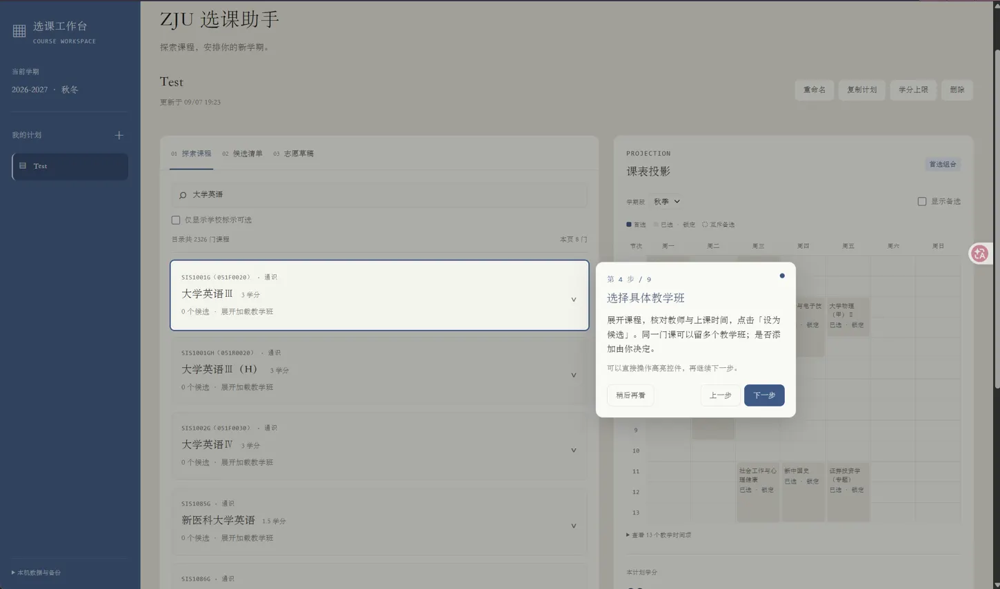
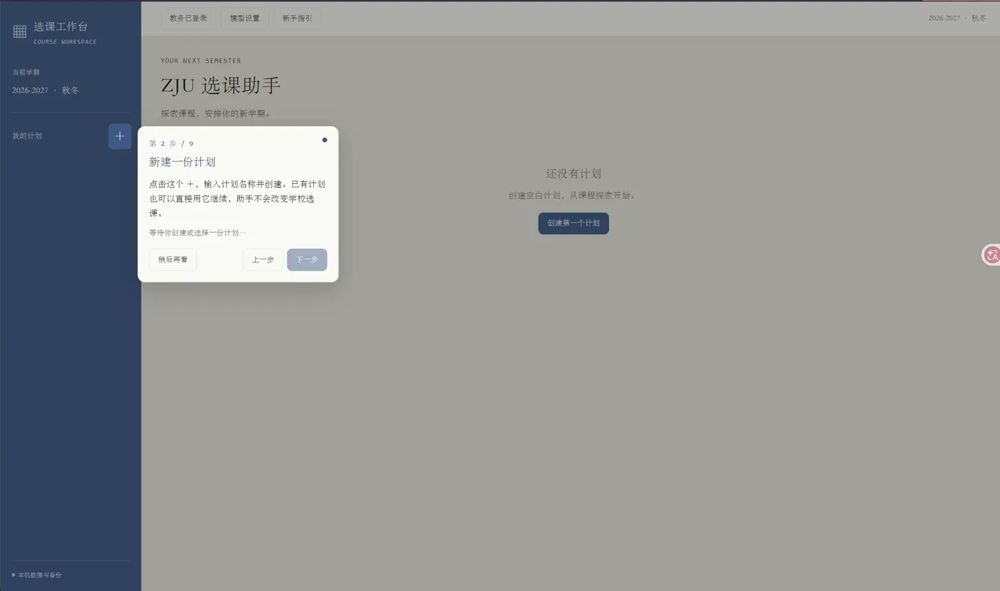
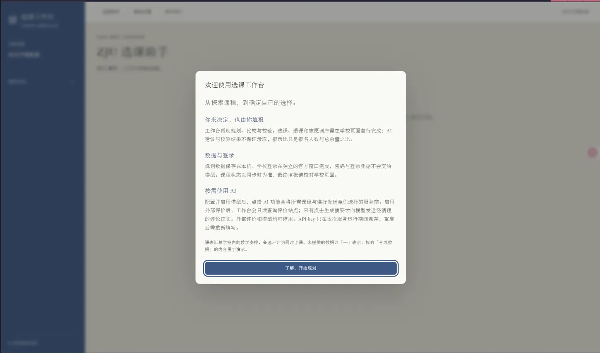
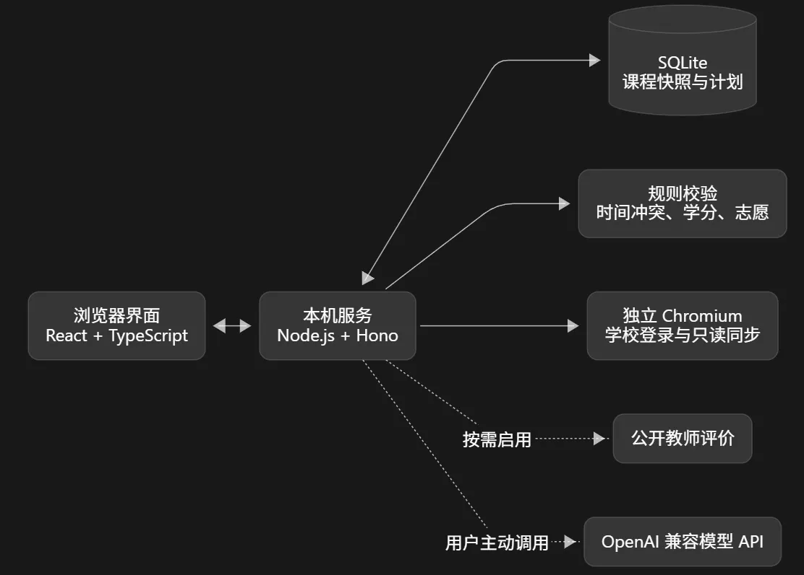
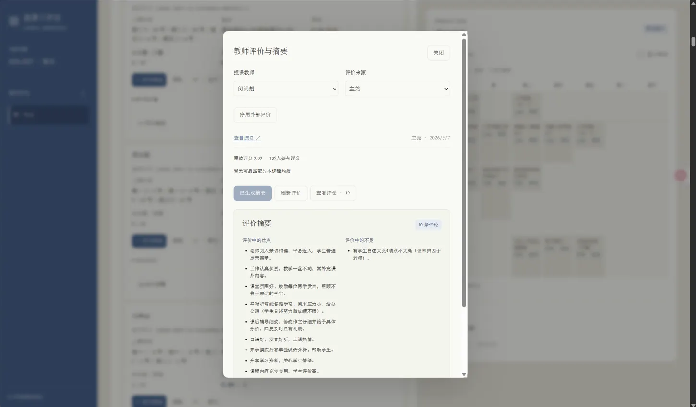
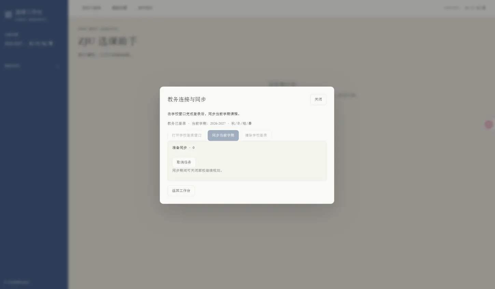
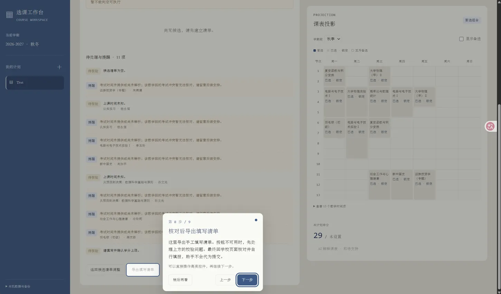
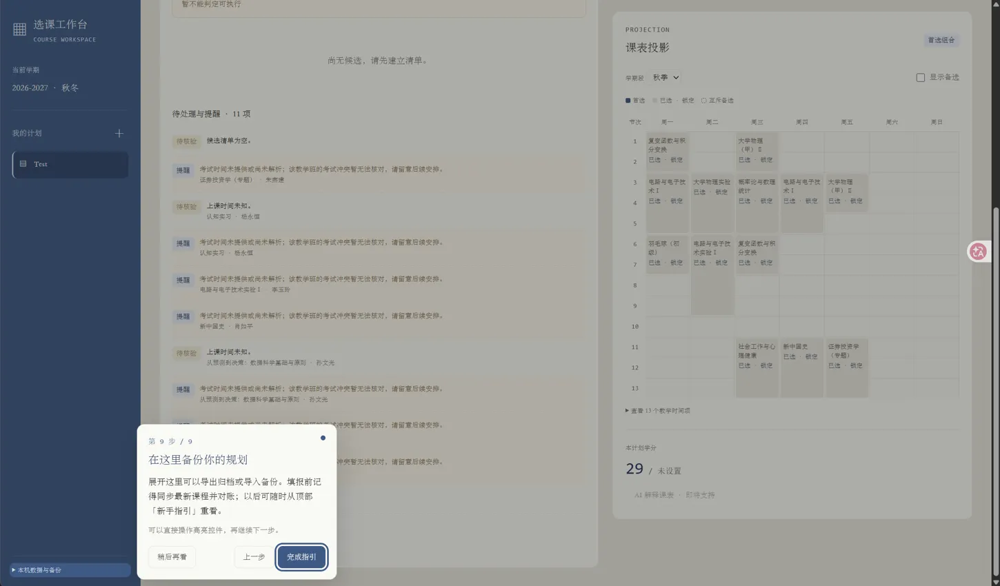
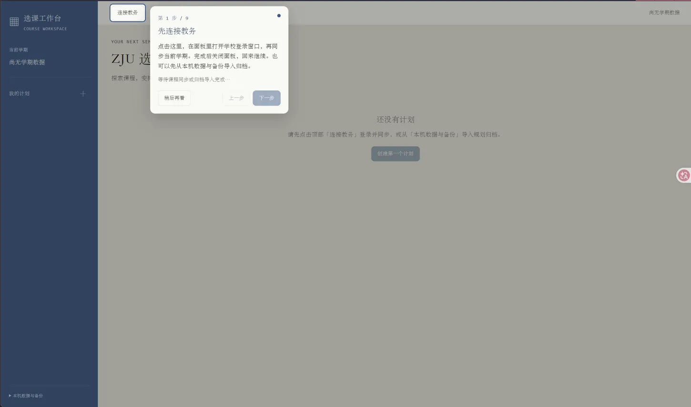
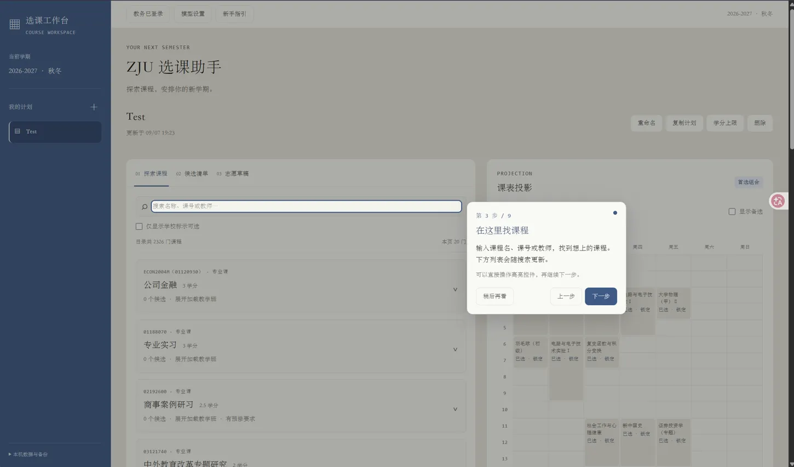
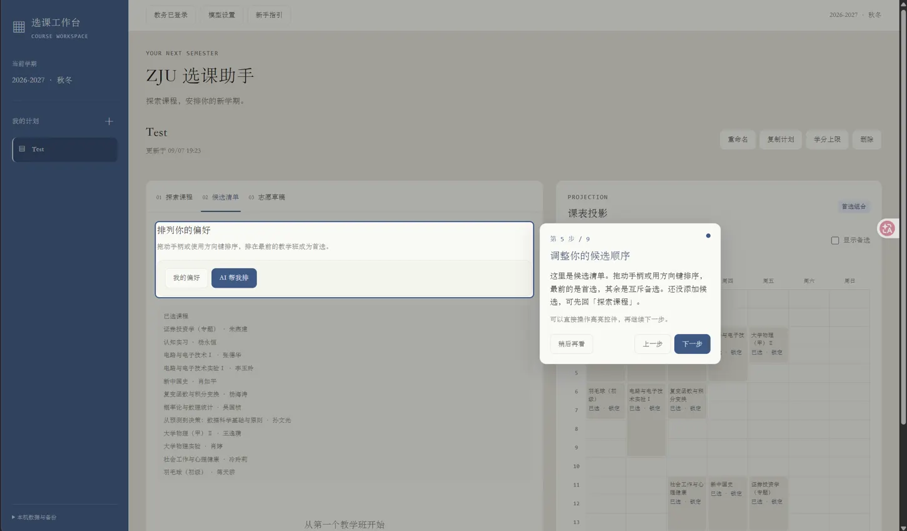
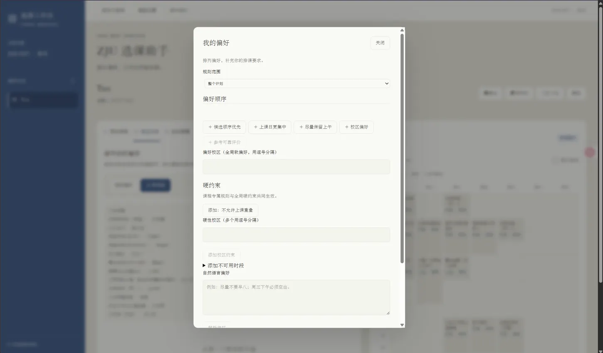
项目文档
ZJU 选课助手
ZJU 选课助手
一、项目基本信息
二、项目简介
开发背景：
ZJU学生苦彩票系统久矣！学生需要综合考虑课程内容、教师评价、上课时间和选上的概率，设计选课策略，而相关信息分散在教务系统与评价网站中，缺少统一的规划入口，且选课机制复杂，规划需要耗费大量的时间精力。ZJU 选课助手定位为辅助决策工具，帮助学生从查找课程、比较方案到准备填报，完成选课前的规划。
解决的痛点：
- 信息分散： 课程安排与教师评价需要反复切换页面查看，比较效率低。
- 安排复杂： 同一课程有多个教学班，人工检查时间冲突、整理首选和备选费时费力。
- 方案难比较： 不同选课方案缺少独立保存和对照方式，调整时容易混淆。
- 规划困难： 部分用户不熟悉操作流程和选课规则，也难以将个人偏好转化为具体课表。
目标用户：
主要面向有选课规划需求的浙江大学学生，尤其是需要比较多个教学班、协调复杂课表的学生（预置课太烂的倒霉蛋bushi）。
核心功能：
- 课程探索： 同步教务课程，按课程或教师搜索，查看教学班信息，并按需参考教师评价。
- 多方案规划： 创建独立计划，管理候选教学班，调整首选与备选顺序。
- 课表与校验： 可视化展示课程安排，提示时间冲突、志愿限制及待核对信息。
- AI 辅助： 根据候选课程和已确认偏好生成课表建议。
三、核心使用流程
> 下载运行包，启动工作台
>
>
>
>
> 同步当前课表
>
>
> 新建计划
>
>
> 搜索想报的课程
>
>
> 挑选目标课程的教学班
>
>
> 了解老师信息，报录比等教学班信息（评价和均绩数据均来源于chalaoshi，本项目仅作搬运和摘要，请谨慎采纳）（chalaoshi提供两个站点，其中主站更新及时但是需要🪜，备用站无需🪜但是评价具有滞后性）
>
>
> 调整志愿顺序
>
>
> 对照课表检查安排
>
>
> [可选] 如果有需要，启用AI辅助排课功能
>
>
> 核对后导出清单
>
>
> [可选] 本机备份处理
>
>
四、技术与实现
>
>
> 主要技术栈
>
>
> API与外部服务
>
>
> 核心功能实现方式
>
>
> 运行方式
>
>
五、小组分工
六、开发过程
简要记录项目需求分析、功能开发、测试优化等过程（不一定需要很复杂，但是最好能覆盖整个开发时间线，至少要有头有尾），并说明开发中遇到的主要问题以及解决方法。可以结合任务记录、会议记录或代码提交记录进行说明。
需求分析：在暑期集训时，经过团队成员的讨论，发现选课给大家带来了很大的困扰，决定开发一站式的选课助手，解决这个问题。经过多轮讨论与方案迭代，我们瞄准了信息分散，安排复杂，方案难比较，规划困难等痛点。
产品设计：根据需求，我们设计了产品的形态，功能和交互逻辑，并完成了前置验证，然后搭建代码的框架
开发：在暑期黑客松期间，我们根据架构与接口并行完成基本功能的开发，实现了第一版的功能
测试优化：完成开发后，在测试中暴露了一些问题，正在逐步优化中
发布v1
七、项目视频演示
八、项目不足与后续计划
不足：
1. 课程搜索目前仅支持按课程名搜索，后续会加入按课程序号，按时间段等多样化的搜索方式
2. 部分chalaoshi上未出现的新老师以及一门课程多个老师时会出现教师名字未知的情况
3. 由于开发时间的问题，未在真实第一轮选课场景下进行测试，当前测试局限于未开放时间段选课（当前待定人数为0）与合成数据
后续计划：
1. 等后续开放选课时间进行真实测试，并优化现有问题
2. 确认稳定可用后，尝试开源推广